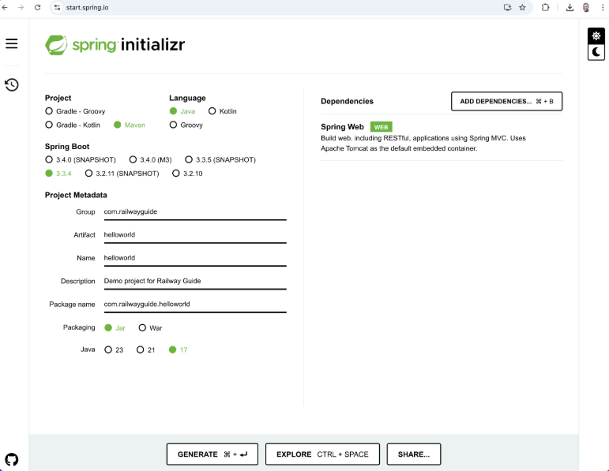
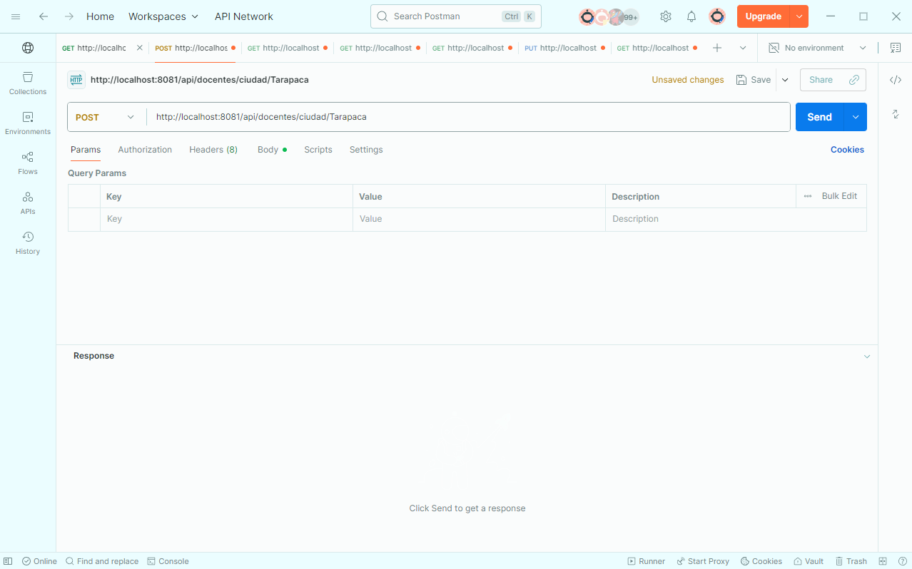
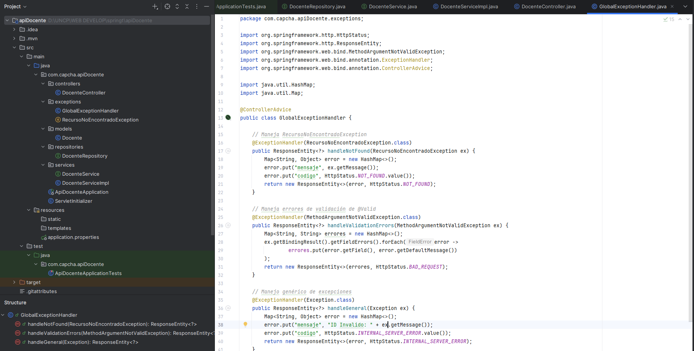

El enfoque principal fue desarrollar una aplicación web moderna con Spring Boot desplegada en Apache Tomcat, siguiendo el patrón de arquitectura en capas: controlador, servicio y repositorio. Usamos JSP como motor de vistas, Maven para gestión de dependencias, `application.properties` para configurar la conexión con MySQL, y realizamos pruebas con Postman para validar los endpoints REST.
1. Arquitectura en Capas
Se dividió la aplicación en 3 capas principales:
- Controlador (Controller): Gestiona las solicitudes HTTP. Utiliza anotaciones como
@RestController, @GetMapping, @PostMapping, etc.
- Servicio (Service): Contiene la lógica de negocio. Se inyecta con
@Autowired al controlador.
- Repositorio (Repository): Accede a la base de datos usando interfaces como
CrudRepository o JpaRepository.
2. Apache Tomcat
Apache Tomcat es un contenedor de servlets desarrollado bajo el proyecto Jakarta en la Apache Software Foundation que implementa las especificaciones de servlets y JSP.
Estructura de Directorios:
- bin: Ejecutables y scripts para arrancar y parar Tomcat
- conf: Ficheros de configuración (server.xml, web.xml)
- webapps: Directorio donde se despliegan las aplicaciones web
- logs: Archivos de registro de la ejecución
Configuración server.xml:
<Server port="8005" shutdown="SHUTDOWN">
<Service name="Catalina">
<Connector port="8080" protocol="HTTP/1.1"
connectionTimeout="20000"
redirectPort="8443" />
<Engine name="Catalina" defaultHost="localhost">
<Host name="localhost" appBase="webapps"
unpackWARs="true" autoDeploy="true">
</Host>
</Engine>
</Service>
</Server>
3. Maven como Gestor de Dependencias
Maven es una herramienta de software libre para gestionar proyectos Java que permite:
- Gestionar dependencias del proyecto automáticamente
- Compilar el código fuente de manera automática
- Empaquetar la aplicación en archivos .jar o .war
- Generar documentación del proyecto
Estructura básica de pom.xml:
<project xmlns="http://maven.apache.org/POM/4.0.0"
xmlns:xsi="http://www.w3.org/2001/XMLSchema-instance"
xsi:schemaLocation="http://maven.apache.org/POM/4.0.0
http://maven.apache.org/xsd/maven-4.0.0.xsd">
<modelVersion>4.0.0</modelVersion>
<groupId>com.miempresa</groupId>
<artifactId>mi-aplicacion</artifactId>
<version>1.0-SNAPSHOT</version>
<properties>
<maven.compiler.source>17</maven.compiler.source>
<maven.compiler.target>17</maven.compiler.target>
</properties>
<dependencies>
<dependency>
<groupId>org.springframework.boot</groupId>
<artifactId>spring-boot-starter-web</artifactId>
<version>3.1.0</version>
</dependency>
</dependencies>
</project>
4. JavaServer Pages (JSP)
JSP es una tecnología para crear páginas web dinámicas que permite:
- Mezclar HTML con código Java mediante scriptlets
- Acceder a objetos implícitos como request, response y session
- Reutilizar componentes mediante etiquetas personalizadas
Elementos básicos de JSP:
<%-- Directiva de página --%>
<%@ page contentType="text/html;charset=UTF-8" language="java" %>
<%-- Declaración --%>
<%! int contador = 0; %>
<%-- Scriptlet --%>
<%
String nombre = request.getParameter("nombre");
contador++;
%>
<%-- Expresión --%>
<p>Hola <%= nombre %>, eres el visitante #<%= contador %></p>
5. Configuración del Proyecto Spring Boot
Se añadieron las siguientes dependencias en pom.xml:
- spring-boot-starter-web
- spring-boot-starter-data-jpa
- mysql-connector-java
- spring-boot-starter-tomcat (para despliegue embebido)
- javax.servlet-api (para JSP)
Configuración en application.properties:
# Configuración de MySQL
spring.datasource.url=jdbc:mysql://localhost:3306/mi_base
spring.datasource.username=root
spring.datasource.password=123456
spring.jpa.hibernate.ddl-auto=update
spring.jpa.show-sql=true
# Configuración de Tomcat
server.port=8080
server.servlet.context-path=/mi-app
# Configuración de vistas JSP
spring.mvc.view.prefix=/WEB-INF/views/
spring.mvc.view.suffix=.jsp
6. Endpoints REST y pruebas en Postman
Se desarrollaron endpoints para una entidad "Estudiante". Ejemplos:
GET /api/estudiantes → Lista todos los estudiantesPOST /api/estudiantes → Crea un nuevo estudiantePUT /api/estudiantes/{id} → Actualiza por IDDELETE /api/estudiantes/{id} → Elimina por ID
Todos los endpoints fueron probados usando Postman para validar las respuestas en formato JSON.
7. Flujo completo de una petición
Al realizar una solicitud desde el navegador (por ejemplo, /api/estudiantes), esta sigue el siguiente flujo:
- El navegador envía una solicitud GET al servidor Tomcat en el puerto 8080
- Tomcat pasa la solicitud al DispatcherServlet de Spring
- El
EstudianteController recibe la solicitud y llama al servicio
- El
EstudianteService ejecuta la lógica de negocio y consulta al repositorio
- El
EstudianteRepository accede a la base de datos mediante JPA
- La respuesta viaja de vuelta a través de las capas y Tomcat devuelve el JSON al cliente
8. Imágenes del Proyecto



¿Qué Aprendí?
Comprendí cómo se construye una API REST completa con Spring Boot desplegada en Tomcat, utilizando Maven para gestión de dependencias y JSP para las vistas. Aprendí a configurar la conexión a MySQL, organizar el proyecto en capas (controller-service-repository), y probar los endpoints con Postman. También entendí el rol de Tomcat como contenedor de servlets y cómo Spring Boot simplifica el despliegue con un Tomcat embebido.
¿Cómo Aprendí?
Aprendí mediante la creación práctica de clases Java, configuración de archivos XML y properties, pruebas en Postman, y observación del flujo de peticiones desde el navegador hasta la base de datos. La combinación de teoría (documentación de Spring y Tomcat) con práctica (implementación real del proyecto) me permitió comprender profundamente cada componente.